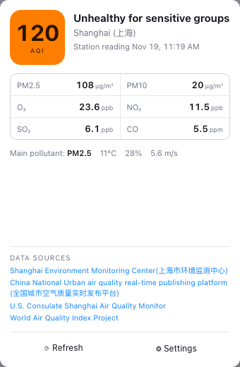

Air quality, one glance away.
A live AQI in your macOS menu bar or Windows system tray. Free, open source, and it talks straight to aqicn.org with your own token — no account, no server of ours.
macOS 11+ (Apple Silicon and Intel) · Windows 10/11 · MIT licence

What it does
A menu bar you actually control
Show the AQI, the PM2.5 number, or just a colour dot. Add “AQI 51”, the quality level (“51 · Moderate”, “51 · 良”), the station name, or none of them. The panel previews the result as you toggle it, and the text can take the level colour.
English, 简体中文, 日本語
Follows your system language, or pick one in Settings. The tray menu changes with it.
Your token, your request
Each reading is fetched from your machine to aqicn.org with the free token you register in ten seconds. Nothing passes through a server of ours, and there is no telemetry.
Honest when it can't refresh
A failed refresh keeps the last reading and marks it stale, instead of turning into a blank panel at the moment you care.
Signed releases, built-in updater
Every build is signed and each installer publishes its SHA-256. The updater is built in, but an in-place update has not been verified end to end yet — for now, install the new build from this page.
MIT, all of it
Rust and TypeScript, built with Tauri. Read it, fork it, ship your own version.
Past readings, and what comes next
The panel plots this machine's readings and aqicn's daily forecast on one axis — the forecast as a min–max band, so a model estimate never reads like a measurement.
Install
macOS
Open the releases pageWindows
Open the releases pageFirst launch is blocked — here is how to open it
It is not a virus. Neither build has a paid signing certificate — the macOS app is ad-hoc signed and not notarised by Apple — so the system warns you once. The download itself is fine.
macOS
First drag the app into Applications — double-clicking it straight from the downloaded disk image runs it from a temporary location, which causes trouble later. Once it is in Applications, double-clicking shows a dialog saying Apple could not verify “AQI Menubar” is free of malware. Nothing in it opens the app — that is the block, not a broken app. If the dialog instead says “AQI Menubar” is damaged and can’t be opened, the download did not finish: download the installer again, and the steps below are not needed.
- Open the app once in Finder — it gets blocked, that is expected. Then go to System Settings → Privacy & Security → Security and press the button next to the notice about the app (usually Open / Open Anyway), confirm, and enter your login password. That button only appears for an hour after the blocked attempt, which is why the double-click comes first.
- On macOS 14 and earlier there is also a shortcut: Control-click the app icon → Open → Open. macOS 15 and later no longer offer it.
Windows
Running the installer may show a blue “Windows protected your PC”. If you don't see it, nothing blocked you — just go ahead and install.
- Click “More info” → “Run anyway”. If the same dialog shows up the first time you start the app, handle it the same way.
After installing: open the app, press “Get a free token”, paste the token that arrives by email. That's it.
Data, and who made it
Readings come from the World Air Quality Index project (aqicn.org / waqi.info) and the monitoring agencies that contribute to it. The panel shows the attribution the API returns for every reading — the agency that measured it — as a link, as the platform's terms require.
The app is free and is not affiliated with or endorsed by WAQI. It does not sell, resell, cache or redistribute the data: each client fetches its own readings with its own token.
- Install the app.
- Get a free token at aqicn.org — email only.
- Paste it in Settings and pick your city.